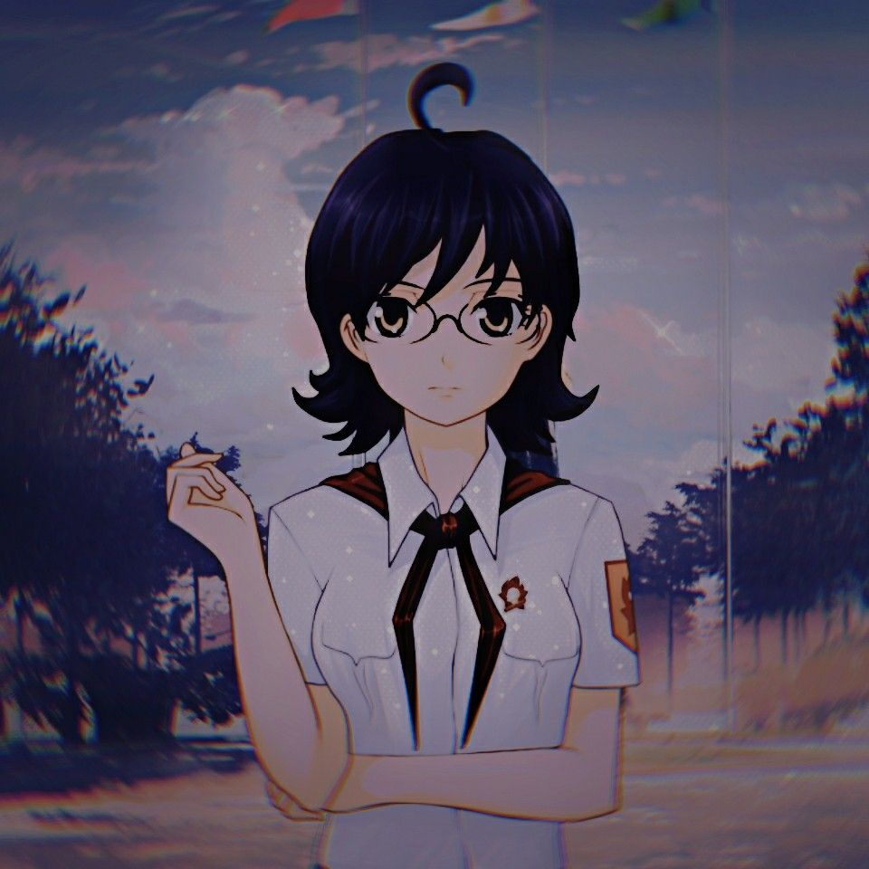

второстепенная героиня новеллы «Бесконечное Лето». Заведующая библиотекой.
Женя — девушка небольшого роста, в толстых очках, с тёмно-синими волосами, из которых выбивается ахоге - торчащая прядь волос на макушке.
Она является заведующей библиотекой, проводя там большую часть своего времени, где была обнаружена за сном на рабочем месте.
Девушка отличается довольно трудным и неприветливым характером — она прямолинейна, не стесняется отвечать собеседникам в грубой манере и говорит то, что думает о них, из-за чего многие пионеры не желают посещать библиотеку.
Такое поведение выливается в то, что её никто не хочет брать в пару в поход, отчего ей приходится идти вместе с Семёном, что, впрочем, не особо обрадовало её. Из её положительных черт характера можно отметить начитанность, как и подобает библиотекарше.